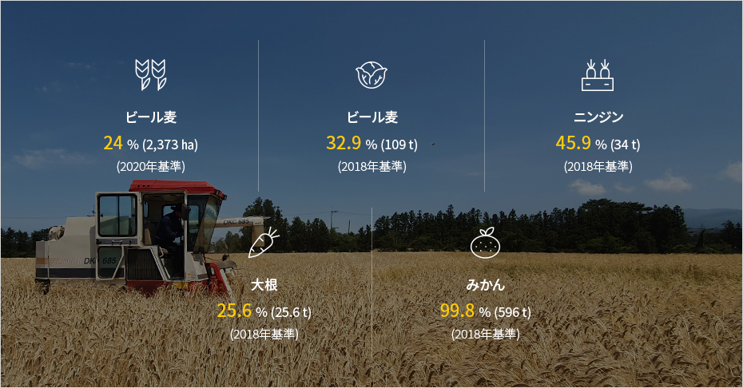

伝統的基幹産業
- Home
- 投資環境
- 伝統的基幹産業
第1次産業
済州の農業は伝統的な産業であると同時に経済の根幹をなす生命産業で、済州で最も広い面積を占めている産業です。
済州は地域総生産(GRDP)が韓国の1%水準に過ぎませんが、済州で生産される野菜類、果実類の生産量は全国産出量の7.7%(2018)を占めるほど第1次産業が非常に発達した地域です。
特に、全国に供給されるキャベツ(32.9%)、ニンジン(45.9%)、大根(25.6%)のような作物やみかん(99.8%)などが済州で多く生産されており、豚の飼育頭数も全国の5.3%を占める韓国の農水畜産物の重要な生産基地です。
済州はクリーンな自然環境を有しており、火山島の良質な土壌と気候は一年中、高品質の農水産物を生産するのに最適な条件を備えているため、韓国の消費者から広く愛されています。
済州の第1次産業資源が韓国で占める割合

